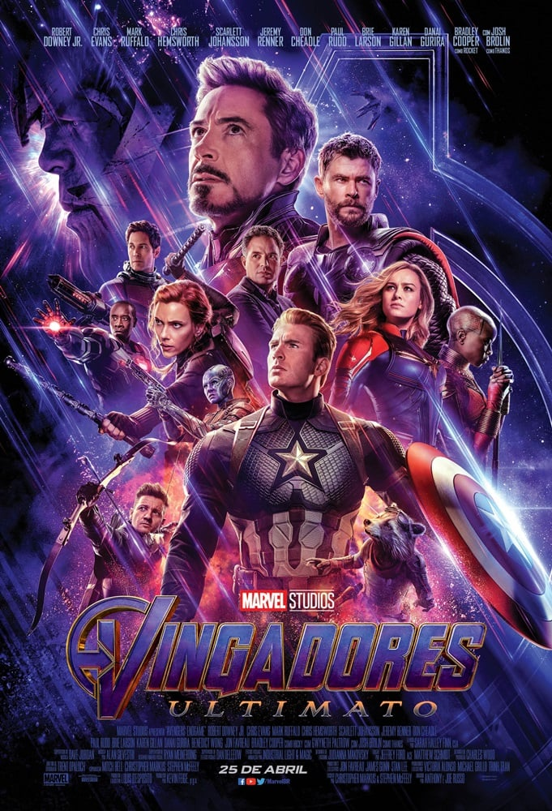

Vingadores Ultimato:
Ano de produção: 2019
Dirigido por: Anthony Russo e Joe Russo.
Duração: 3h 01min.
Classificação: 12 anos.
Gênero: Ação, Aventura, Ficção Científica.
País de Origem: Estados Unidos da América.
Sinopse:
Em Vingadores: Ultimato, após Thanos eliminar metade das criaturas vivas em Vingadores: Guerra Infinita, os heróis precisam lidar com a dor da perda de amigos e seus entes queridos. Com Tony Stark (Robert Downey Jr.) vagando perdido no espaço sem água nem comida, o Capitão América/Steve Rogers (Chris Evans) e a Viúva Negra/Natasha Romanov (Scarlett Johansson) precisam liderar a resistência contra o titã louco.